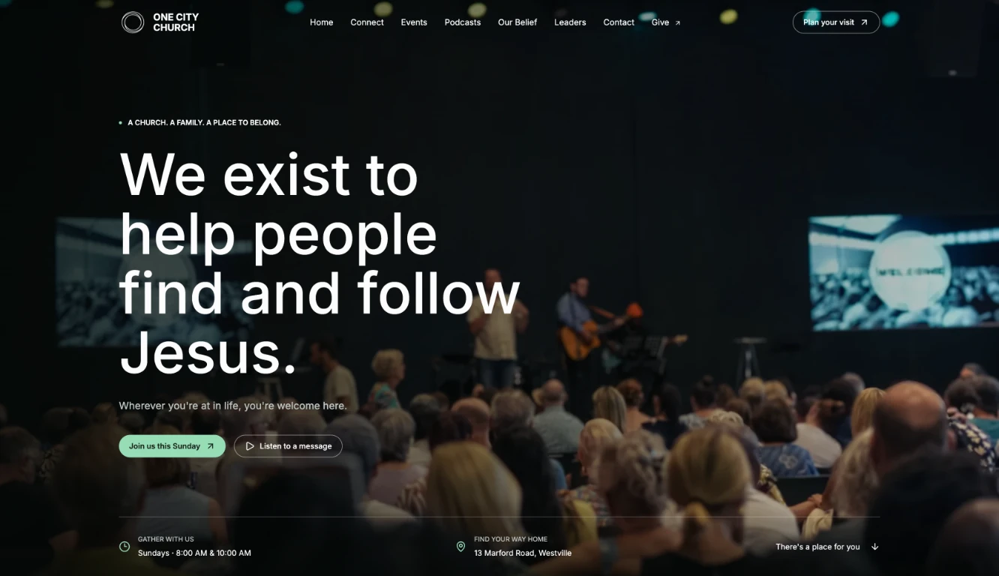
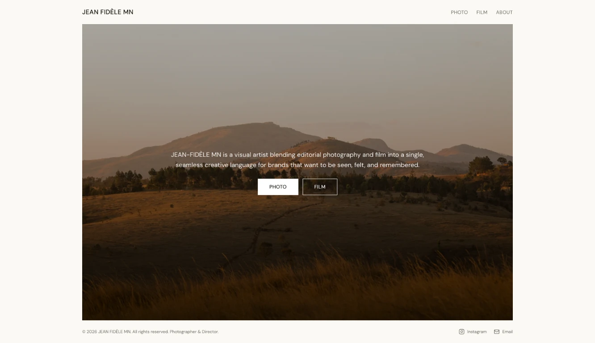
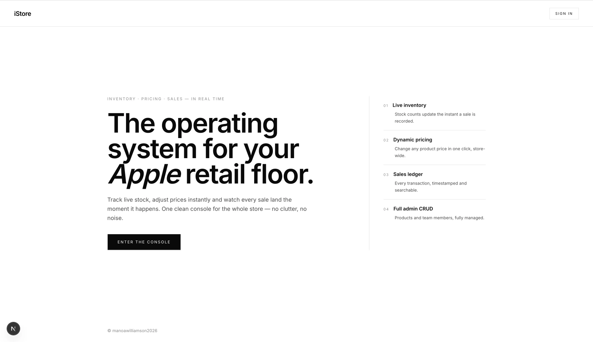
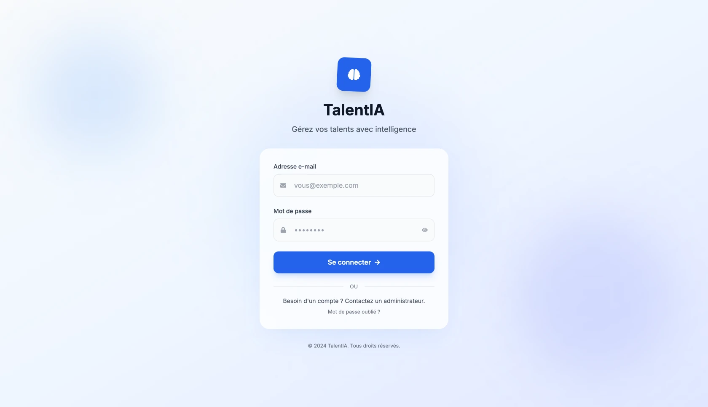

One City Church
WEBSITE / COMMUNITYA welcoming online home that connects a community with services, events, and each other.
Visit website ↗I’m Manoa, a web developer building thoughtful websites and applications that help people connect with your business.
See my work01 / SELECTED WORK
A selection of websites and digital products built for real people and real needs.

A welcoming online home that connects a community with services, events, and each other.
Visit website ↗
A visual home for a photographer and filmmaker telling stories for brands.
Visit website ↗
A single workspace for managing stock, sales, and daily retail operations.
View project ↗
A skills platform that helps teams connect people with the right opportunities.
View project ↗02 / HOW I CAN HELP
Whether you’re starting fresh or ready for a change, I’ll help turn your idea into something useful and distinctly yours.
A considered online presence that makes it easy for people to understand what you do.
Practical digital tools built around the way your business and customers work.
Thoughtful improvements and e-commerce experiences that help your business move forward.
03 / A LITTLE ABOUT ME
I’m Manoa Williamson, an independent web developer based in South Africa. I bring an eye for design and a thoughtful approach to development, helping shape ideas into digital experiences that look considered and work beautifully.
When we work together, you work directly with me—from the first idea through to launch.
Find me on GitHub ↗04 / LET’S WORK TOGETHER
Tell me a little about your idea, what you need, and where you’d like to go. I’d love to hear about it.
Start a conversation